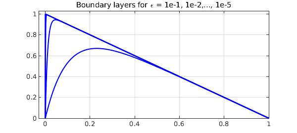
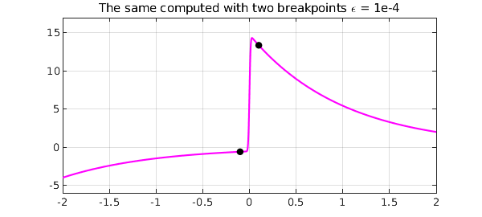
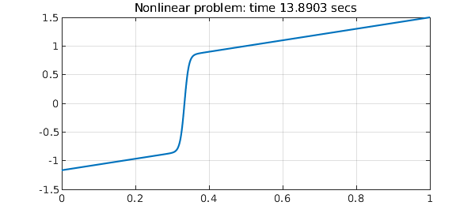
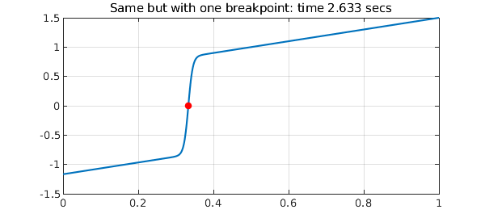

1. Boundary layer example
By default, Chebfun solves BVPs with global grids -- Chebyshev collocation spectral methods -- and this generally works well even for problems with rapidly varying solutions. Trouble appears, however, when the variations are very rapid. For example, following the example ode-linear/BoundaryLayer, here are solutions to the linear advection-diffusion equation $$ -\varepsilon u'' - u' = 1,\qquad u(0) = u(1) = 0 , $$ with $\varepsilon = 10^{-1}, 10^{-2},\dots, 10^{-5}$.
dom = [0,1];
L = @(ep) chebop(@(x,u) -ep*diff(u,2) - diff(u),dom,'dirichlet');
LW = 'linewidth'; lw = 1.6; FS = 'fontsize'; MS = 'markersize';
headings = ' ep pos(max(u)) length(u) time (secs.) ';
disp(headings)
fs = '%12.1e %14.9f %9d %14.2f\n';
for ep = 10.^(-1:-1:-5)
tic, u = L(ep)\1; t = toc;
[val,pos] = max(u);
fprintf(fs, ep, pos, length(u), t)
plot(u,'b',LW,lw), hold on
end
grid on, axis([-0.03 1 0 1.03]), hold off
title('Boundary layers for \epsilon = 1e-1, 1e-2,..., 1e-5',FS,12)
ep pos(max(u)) length(u) time (secs.)
1.0e-01 0.230263049 23 2.21
1.0e-02 0.046051702 59 0.17
1.0e-03 0.006907755 170 0.22
1.0e-04 0.000921034 488 0.73
1.0e-05 0.000115129 1495 7.81

The lengths and timings are excellent for the first three values of $\varepsilon$ and not so bad for $\varepsilon = 10^{-4}$, but for $\varepsilon = 10^{-5}$, we need a grid with thousands of points and the method cannot be regarded as satisfactory. (This boundary layer is of width $O(\varepsilon)$, but because of the quadratic clustering of Chebyshev grids at boundaries, the length of the chebfuns only grows like $O(\varepsilon^{-1/2})$.)
There is a standard method used in scientific computing for such problems, adaptive grid refinement, but Chebfun does not have such a capability at present. For many problems, however, it is remarkable what one can achieve by a method we might regard as "poor man's grid refinement": simply add a Chebfun breakpoint or two near the region of rapid change. To make this happen, it is enough to define the domain of the chebop by a vector of three or more points in order, i.e., the endpoints of an interval plus one or more points in the interior. For example, one might pass to the chebop constructor the domain vector dom = [0 0.01 1] rather than simply dom = [0 1].
If an ODE BVP is solved on a domain with breakpoints, separate Chebyshev grids are used on subintervals, and that may provide a more efficient representation of the solution, which will then be a chebfun with several pieces, i.e., several "funs". For a discussion of some of the mathematics, see [1].
This is a non-adaptive, a priori approach. It cannot cope with a full range of problems, but it can do very well with many of them. For example, here is the same problem as before with a single breakpoint introduced at $x_b = 40\varepsilon$. Just one curve is plotted, the one with $\varepsilon = 10^{-3}$.
dom = @(ep) [0 min(0.5,40*ep) 1];
L = @(ep) chebop(@(x,u) -ep*diff(u,2) - diff(u),dom(ep),'dirichlet');
disp(headings)
for ep = 10.^(-1:-1:-8)
tic, u = L(ep)\1; t = toc;
fprintf(fs, ep, pos, length(u), t)
[val,pos] = max(u);
if ep == 1e-3
plot(u,'b',LW,lw), hold on
breakpoint = u.ends(2);
plot(breakpoint,u(breakpoint),'.r',MS,24)
end
end
grid on, axis([-0.03 1 0 1.03]), hold off
title('The same computed with a breakpoint, \epsilon = 1e-3',FS,12)
ep pos(max(u)) length(u) time (secs.)
1.0e-01 0.000115129 34 0.24
1.0e-02 0.230263049 41 0.21
1.0e-03 0.046051702 41 0.21
1.0e-04 0.006907755 41 0.30
1.0e-05 0.000921034 41 0.26
1.0e-06 0.000115129 41 0.22
1.0e-07 0.000013816 41 0.27
1.0e-08 0.000001612 41 1.93
Quite an amazing improvement! Notice that the breakpoint at $x_b = 40 \varepsilon$ is well out of the boundary layer. The reason for this choice is that the purpose of the breakpoint is not to optimize the representation of $u$ within the small region $[0, x_b]$, where a reasonable number of gridpoints will be required in any case, but rather to ensure that $u$ has no significant structure on a small length scale in the big interval $[x_b,1]$. In fact, the second piece of each chebfun constructed above, the representation of $u$ on $[x_b ,1]$, is just of length 2, i.e., a linear polynomial:
u
u =
chebfun column (2 smooth pieces)
interval length endpoint values
[ 0, 4e-07] 39 3e-15 1
[ 4e-07, 1] 2 1 1.8e-12
vertical scale = 1 Total length = 41
2. Interior layer example
As our second example, we consider a linear problem with an interior layer: $$ \varepsilon u'' + xu' + xu = 0, \quad x \in [-2,2], ~ y(-2) = -4, y(2) = 2 . $$ This has an interior layer of width $O(\sqrt{\varepsilon}\kern 1pt)$ at $x=0$, which we can expect to challenge Chebfun as much as in the previous example, since the layer is thicker but the grid is no longer clustered. An experiment confirms this prediction:
dom = [-2,2];
L = @(ep) chebop(@(x,u) ep*diff(u,2)+x*diff(u)+x*u,dom,-4,2);
disp(headings)
for ep = 10.^(-1:-1:-4)
tic, u = L(ep)\0; t = toc;
[val,pos] = max(u);
fprintf(fs, ep, pos, length(u), t)
plot(u,'m',LW,lw), hold on
end
grid on, axis([-2 2 -6 17]), hold off
title('Interior layers for \epsilon = 1e-1, 1e-2,..., 1e-4',FS,12)
ep pos(max(u)) length(u) time (secs.)
1.0e-01 0.456331114 57 0.28
1.0e-02 0.188033044 154 0.29
1.0e-03 0.073657588 460 0.88
1.0e-04 0.027481095 1398 8.73

Inserting breakpoints on either side of $x=0$ improves matters greatly. Again we plot just one of the curves, the one with $\varepsilon = 10^{-4}$.
dom = @(ep) [-2 -min(.5,10*sqrt(ep)) min(.5,10*sqrt(ep)) 2];
L = @(ep) chebop(@(x,u) ep*diff(u,2)+x*diff(u)+x*u,dom(ep),-4,2);
disp(headings)
for ep = 10.^(-1:-1:-8)
tic, u = L(ep)\0; t = toc;
[val,pos] = max(u);
fprintf(fs, ep, pos, length(u), t)
if ep == 1e-4
plot(u,'m',LW,lw), hold on
breakpoints = u.ends(2:3);
plot(breakpoints,u(breakpoints),'.k',MS,24)
end
end
grid on, axis([-2 2 -6 17]), hold off
title('The same computed with two breakpoints \epsilon = 1e-4',FS,12)
ep pos(max(u)) length(u) time (secs.)
1.0e-01 0.456331114 76 0.38
1.0e-02 0.188033044 114 0.35
1.0e-03 0.073657588 136 0.45
1.0e-04 0.027481095 164 0.47
1.0e-05 0.009892469 195 0.66
1.0e-06 0.003473237 117 0.61
1.0e-07 0.001198204 188 0.54
1.0e-08 0.000408122 101 0.56

Here we see the sizes of the three pieces:
u
u =
chebfun column (3 smooth pieces)
interval length endpoint values
[ -2, -0.001] 11 -4 -0.54
[ -0.001, 0.001] 80 -0.54 15
[ 0.001, 2] 10 15 2
vertical scale = 15 Total length = 101
3. A nonlinear example
"Poor man's mesh refinement" is not restricted to linear problems. For a nonlinear problem with an interior layer, one may not know the location of an interior layer a priori, but an approximation may be enough for the method to work. For example, here is a nonlinear problem with an interior layer adapted from one of the chebgui demos: $$ 0.005u'' + uu' = u, \quad u(0) = -7/6, ~ u(1) = 3/2. $$ A global solution succeeds, but very slowly, for big matrices are involved:
N = chebop(@(u) 0.005*diff(u,2) + u*diff(u) - u, [0 1]); N.lbc = -7/6; N.rbc = 3/2; tic, u = N\0, t = toc; plot(u), grid on title(['Nonlinear problem: time ' num2str(t) ' secs'],FS,12)
u =
chebfun column (1 smooth piece)
interval length endpoint values
[ 0, 1] 760 -1.2 1.5
vertical scale = 1.5

The transition occurs at about $x=1/3$, and if we put a single breakpoint there, the computations becomes five times faster.
N = chebop(@(u) 0.005*diff(u,2) + u*diff(u) - u, [0 1/3 1]); N.lbc = -7/6; N.rbc = 3/2; tic, u = N\0, t = toc plot(u), grid on title(['Same but with one breakpoint: time ' num2str(t) ' secs'],FS,12) breakpoint = u.ends(2); hold on plot(breakpoint,u(breakpoint),'.r',MS,24), hold off
u =
chebfun column (2 smooth pieces)
interval length endpoint values
[ 0, 0.33] 96 -1.2 -3.7e-09
[ 0.33, 1] 131 -3.7e-09 1.5
vertical scale = 1.5 Total length = 227
t =
9.008673999999999

Note that the matrix size is now a good smaller, which is the main reason for the speedup.
With two breakpoints, for this particular example, not much changes.
N = chebop(@(u) 0.005*diff(u,2) + u*diff(u) - u, [0 .30 .36 1]); N.lbc = -7/6; N.rbc = 3/2; tic, u = N\0, t = toc plot(u), grid on title(['Same but with two breakpoints: time ' num2str(t) ' secs'],FS,12) breakpoints = u.ends(2:3); hold on plot(breakpoints,u(breakpoints),'.r',MS,24), hold off
u =
chebfun column (3 smooth pieces)
interval length endpoint values
[ 0, 0.3] 45 -1.2 -0.86
[ 0.3, 0.36] 53 -0.86 0.84
[ 0.36, 1] 73 0.84 1.5
vertical scale = 1.5 Total length = 171
t =
11.105658000000000
As the illustrations of this Example probably make clear, inserting breakpoints is bit of an art, and some experimentation is generally worthwhile.
4. Reference
[1] T. A. Driscoll and J. A. C. Weideman, Optimal domain splitting for interpolation by Chebyshev polynomials, SIAM J. Numer. Anal. 52 (2014), 1913-1927.